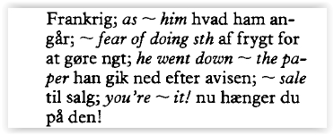

tap to sort
tap to sort
tap to sort
-prep-
- -ombord- adv
- -om board på- prep
-prep-
-noun-
- at about two o'clock
ved totiden - it's about here
det er her et sted - it's about time
det er på tide - that's about it
det er vist det hele - walk about the town
gå rundt i byen - be earnest about sth
mene ngt alvorligt - what are we going to do about it?
havd skal vi gøre ved det? - be up and about
være oppe (af sengen)
være på benene - be about to cry
være lige ved at græle - what about a cup of tea?
havd med en kop te? - bring about
forårsage - I'm calling about the advertisement
jeg rinder vedrørenden annoncen - about-turn
kovending noun
- -omkring-
- -rundt-
- -om-
- -vedrørende-
- -omtrent-
- -circa-
-prep-
-adj-
- above all
fremfor alt - be above sth
være hævet over ngt - it is not above him to steal
han under sig ikke for at stjæle - from above
ovenfra - it is above me
der ligger over min forstand - the above items
ovennævnte ting - over and above
foruden
ud over - be over suspicion
være hævet over mistanke - aboveboard
ærlig adjective
åben - abovementioned
ovennævnt adjective
- -over-
- -overoven-
- -ovenpå-
- -mere end-
-prep-
- walk across the road
gå over gaden - a road across the wood
en vej trvæs igennem skoven - across from
lige over for - come across
støde på, møde - across the EU
i hele EU - 50 m across
50 m i tværsnit
- -over-
- -tværs over-
- -på den anden side af-
- -på tværs-
- -over kors-
- -vandret- (i krydsord)
-adj-
-adv-
-conj-
-noun-
- what are you aftwer?
havd er du ud efter? - ask after sb
spørge til en - after all
når det kommer til stykket
alligevel - take after sb
ligne en - aftercare
(fig) hen en vejen - aftereffects
pl eftervirkninger
efterveer - afterlife
livet efter døden noun - aftermath
eftervirkning noun - in the aftermath of the war
i tiden efter krigen - afternoon
eftermiddag noun
- -efter-
- -baefter-
- -senere-
- -efter at- conjunction
- run against time
løbe om kap med tiden - as against
sammenlignet med / mod

- -mod-
- -imod-
- -ud-
- -for
- -ved-
-adv-
- is he coming along?
kommer han med? - along with
sammen med
foruden - all along
hele tiden - get along with
komme godt ud af det med
klare sig med - along the way
(fig) hen ad vejen - alongside
ved siden af
langs med preposition
- -langs (med)-
- -hen ad-
- -med-
- -af sted-
-amidst-

- -midt i-
- -blandt-
-amongst-
- among other things
blandt andet - among others
blandt andre - among themselves
indbyrdes - they kept it amomg themselves
de holdt det for sig selv

- -mellem-
- -blandt-
-adv-
- is he around?
er han her (et sted)? - she's been around
hun har set (,oplevet) lidt af hvert
- -rundt-
- -rundt om-
- -omkring-
- -omkring i-
- -om-
-adv-

- -overskrævs- adverb
- -overskrævs på- preposition
- at the baker'r
hos bageren - at school
i skole(n) - at the table
ved bordet - sit at the table
sidde til bords - at times
til tider - at that
oven i købet - laugh at
le ad - throw stones at sb
kasre sten efter en - sell sth at $50
sægle ngt for $50 - what are you at now?
hvad laver du nu? - what are you driving at?
hvad hentyder du til? - while you are at it...
mens du nu er i gang...
- -på-
- -i-
- -ved-
- -hos-
- -ad-
- -til-
-verb-
-noun-
- behind bars
bag tremmer - the Bar (jur)
advokatsstanden - block
spærre verb - close
stænge verb - exclude
udelukke verb - forbid
forbyde verb - bar none / without exception
uden undtagelse

- -stang-
- -tremme-
- -vinduessprosse-
- -stykke- (chokolade)
- -bom-
- -hindring-
- -bar-
- -bardisk-
- -takt- (mus)
- (på mål) -overligger-
- -undtagen-
- -med mindre
-adverb-
- the week before
ugen før - I've seen it before
jeg har set det før - before long
inden længe - sit before the mirror
sidde foran spejlet - beforehand
forvejen adverb
på forhånd adverb

- -før-
- -inden-
- -foran-
- -forud-
- -forud for-
-adverb-
- from below
nedefra
- -nedenunder-
- -nede-
- -nedenfor-
- -under-
-adverb-
- beneath contempt
under al kritik
uværdig - it was beneath him...
det var under hans værdighed at...

- -nedenunder-
- -nedenfor-
- -under-
- be beside oneself with anger
være ude af sig selv af vrede

- -ved siden af-
-adv-

- -desuden-
- -for øvrigt-
- -foruden-
-adv-
- in between
ind imellem - between you and me
mellem os sagt - between the two of them
tilsammen

- -mellem-
-adverb-
- it's beyond control
det er ude af kontrol - beyond doubt
uden for enhver tvivl - beyond repair
umulig at reparere - it's beyond me
det går over min forstand
- -hinsides-
- -på den anden side-
- -længere-
- -på den anden side af-
- -ud over-
- -over-
-conj-
- nuthing but
ikke andet end
bare - but for her
havde det ikke været for hende - all but finished
næsten færdig - anything but
alt andet end
langtfra - the last but one, penultimate
den næstsidste
- -men-
- -kun-
- -undtagen-
- written by Plato
skrevet af Plato - a house by the river
et hus ved floden - get by
klare sig - pass by
gå (,køre etc) forbi - the train went by Madrid
tiget kørte via Madrid - go by bus
køre med bus - paid by the hour
timelønnet - all by oneself
helt alene - by the way
for resten - by and by
om lidt
snart - by and large
stort set - multiply by two
gange med to - divide by two
dividere med to
- -af-
- -ved-
- -forbi-
- -via-
- -med-
- -betragtning af-
-betragtning at- - -efter omstrændighelerne-

- -trods-
- -til trods for-
- during the war
under krigen
- -under-
- -i løbet af-
- -før-
- -inden-
-verb-
- except for
bortset fra - except when
undtagen når - excepting
undtagen
bortset fra
- -undtage- verb
- -undtagen-
-verb-
-adj-
-noun-
-phr-
- his courage failed him
modet svigtede ham - fail in sth
være mangelfuld på en punkt - faile to
kunne ikke
undlade at - without fail phrase
helt bestemt - failing noun
svaghed
fejl
skavank - fail-safe adjective
fejlsikret
- -i mangel af- preposition
- -fejlsikret- adjective
- -svigte-
- -slå fejl-
-mislykkes- - -fejle-
- -dumpe-
- -blive svagere-
- -mangle-
-verb-
-adj-
-noun-
- ...as follows
...som følge...
...følgende... - it follows that...
heraf følger at... - follow suit
følge trop
gøre ligeså - follow up
følge op
førfolge - with drink to follow
med drinks oven på (,bagefter) - follower noun
ledsager
tilhænger - following noun
følge
tilhængere - follow-up noun
opfølgning
efterkontrol - following adjective
følgende

- -efter- preposition
- -følge-
-følge efter- - -efterfølge-
- -følge med-
- -være en følge-
-være en følge af-
-conj-
- for all I know
så vidt je ved - I haven't seen him for weeks
jeg har ikke set ham i flere uger - leave for France
tage af sted til Frankrig - as for him
hvad ham angår - for fear of doing sth
af frygt for at gøre ngt - he went down for the paper
han gik ned efter avisen - for sale
til salg - you're for it! (danger)
nu hænger du på den!

- -for-
- -til-
- -om tidsrum i-
- -i-
- -for- conjunction
- from childhood
fra barndommen af - from what he says
efter hvad han siger - safe from
sikker mod

- -fra-
- -på grund af-
-adv-
-adj-
- their party is in (their party is in power)
deres parti er ved magten - in two weeks
om to uger - in a second
om et sekund
på et sekund - a man in ten
en mand ud af ti - in hundreds
i hundredvis - is he in?
er han hjemme? - he's in the country
han er på landet - in town
i byen - in English
på engelsk - in my opinion
efter min mening - ask sb in
invitere en indenfor - know the ins and outs of sth
kende ngt ud og ind - in that
idet
derved at - you are in for it now (be in trouble for sth you have done)
nu hænger du på den - sb has got in for me (someone is after me)
der er ngn der er ude efter mig

- -inde- adjective
- -ved magten- adjective
- -på mode- adjective
- -i-
- -om retning ind-
- -ind-
- -om tid om-
- -om-
- -på-
-verb-
- -omfatte- include
- -medregne- -inkludere- include
- -iberegnet- -inklusive- including
-noun-
-adj-
- within ten minutes
indenfor ti minutter - he's been inside
(også) han har siddet inde - within three weeks
inden for tre uger - know sth inside out
kende ngt ud og ind
- -inderside- noun
- -indvendig-
-indenfor-
-inder-- adjective - -inde- preposition
- translate sth into English
oversætte ngt til engelsk - far into the night
(til) langt ud på natten - turn into
blive til
lave om til - he's into computers
han er interesseret i computere
han arbejder i computerbranchen

- -ind i-
- -ned i-
- -op i-
- -ud i-
- -til-
-adj-
-adv-
- less and less
mindre og mindre - more or less
mere eller mindre - less than
mindre end
ringere end - less than half
under halvdelen - the less you say the better
jo mindre du siger, des bedre - no less than
ingen (,intet) mindre end - three minus two is one
tre minus to er en - a year minus five days
et år minus fen dage

- -minus- preposition
- -mindre- adj / adv
- -færre- adj / adv
- -ringere- adj / adv
-adv-
-adj-
-noun-
-verb-
- the like noun
magen - and the like noun
og lignende - the likes of you noun
sådan nogle som du - I would like to
je vil(le) gerne - be (,look) like sb
ligne en - what is it like?
hvordan er det? - She screamed like mad
hun skreg som en gal - that's just like him!
hvor det ligner ham! - something like
omkring
circa
sådan ngt som
ngt lignende - that's more like it!
der er (,var) bedre!
det begynder at ligne! - (as) like as not (= probably)
sandsynligvis, sikkert - feel like
have lyst til
føle sig som - likeable
tiltalende
- -lignende- adj / adv / prep
- -ens- adj / adv / prep
- -som- -ligesom- adj / adv / prep
- -som om- adj / adv / prep
- -kunne lide- verb
- -holde af- verb
- -tiltalende- adjective
-noun-
- 5 - 3 =2
fem minus tre er to

- -minus- (tegn = sign) noun
- -minus- prep
-adv-
-adj-
-noun-
- nearby
lige ved
i nærheden - near to
nær ved - draw near
komme nærmere - it's nowhere near enough
det er ikke på langt nær nok - it was a near thing
det var på et hængende hår
det var lige før det gik galt - nearby
nærliggende
i nærheden adverb - Near East
Nære Østen noun

- -nær- adj / adv / prep
- -i nærheden- adj / adv / prep
- -næsten- adj / adv / prep
- -nærliggende- adv
-adv-
-conj-
- -ikke desto mindre- (nonetheless) adv
- -trods- (despite)
-uanset- (regardless) prep - -uagtet- (notwithstanding) conj
- a friend of ours
en af vore venner
vores ven - the son of the boss
chefens søn - the 5th of June
den femte juni - south of London
syd for London - of late
i den senere tid
for nylig - a boy of ten
en dreng på ti år - think of sth
tænke på ngt - complain of
klage over - all of you
jer allesammen - all 4 of us
os alle fir
- turn on the light / radio
tænde om lys / radio - turn on the faucet
åben om vandhane - draw nearis the meeting still on?
er der stadil møde?
skal der stadig være møde? - when is this film on?
hvornår bliver denne film vist? - have you got anything on tonight?
skal du ngt i aften? - a house on the river
et hus ved floden - on hearing this, I left
da jeg hørte det, gik jeg - on arrival
ved ankomsten - on the left
på venstre side - on Friday
på Fredag - a week on Friday
fredag otte dage - it's getting on for one o'clock (it's getting close to 1 o'clock)
klokken nærmer sig et - go on
gå videre
fortstætte (continue) - a week on Friday
fredag otte dage - it's not on!
ikke tale om! - on and off
nu og da - be on about sth
ustandselig tale om ngt - this is on me
det her betaler jeg - set sth in motion / initiate sth / start sth
sætte i gang - I'm on to her (I know what she's up to)
jeg ved hvad hun er ud på
- -på-
- -om-
- -ved-
- -i gang-
- -op på-
- -over på-
- -ned på-
-adj-
-noun-
- contrary noun
modsætning - opposite to / from adjective
modsat af / overfor - his counterpart
hans modstykker - his opposite number
his colleague - opposition noun
modstand - political opposition noun
modsætning
- -over for- preposition
- -modsat af-
-modsat overfor-
-adj-
-adv-
- over here prep
her ovre
her over - over there prep
der ovre
der over - all over prep
over det hele
overalt - past prep
forbi
overstået - over and over (again) prep
igen og igen - over and above prep
ud over - over the last 3 years prep
i de sidste tre år - is there any food left prep
er der ngt mad tilovers? - ask sb over prep
invitere en (over til) sig - stay over the weekend prep
blive weekenden over
- -fordi- -ovre- -omme- adj/adv
- -over- -mere end- adj/adv
- -via- adj/adv
- -ud over- -over- prep
- -på den anden side af- prep
- -mere end- prep
-adj-
-noun-
- it's a thing of the past noun
det tilhører fortiden - she has a past (fig → i.e. former relationship) noun
hun har en fortid (dvs. tidl. forhold) - for the past few days adj
de sidste par lage - he's past forty prep
han er over fyrre - it's past midnight prep
det er over midnat - at half past one prep
klokken halvto - it's 10 past prep
den er ti minutter over - past danger prep
uden for fare - past hope prep
håbløs - I wouldn't put it past him to lie prep
det skulle ikke undre mig hvis han at lyve
- -fortid- noun
- -fortidig- -tidligere-
-forløben- -forbi- adj - -forbi-
-længere end- prep - -ud over- prep
-adj-
- pending her arrival prep
indtil hendes ankomst - patent pending adj
patentanmeldt
- -under- -i løbet af-prep
- -indtil- prep
- -uafgjort- adj
- -forestående- adj
- -som står for døren- adj
- per annum prep
pr. år - per capita prep
pr. person - per cent prep
procent - per hour prep
i timen - as per ... prep
ifølge ... - as per normal prep
som sædvanlig
- -igennem- -ved-prep
- -pr.- prep
- -via- prep
- re prep
regarding
- -angående- prep
-adj-
-adv-
-noun-
-verb-
- go the rounds (med) noun
gå stuegang
gå en runde - paper round noun
avis-runde - round off verb
afrunde
slutte - round up verb
inkredse
omringe og fange
om beløb runde op
runde op - all the way round adv
hele vejen rundt - the long way round adv
ad en omvej - all (the) year round adv
hele året (rundt) - round the clock adv
døgnet rundt - itøs just round the corner adv
det er lige om hjørnet - go round adv
gå omkring
gå uden om - go round to sb's house adv
gå hen og besøge en - go round an obstacle adv
gå uden om en forhindring - go round the back adv
gå ind as bagindgangen - go round a house adv
gå rund i et hus
inspicere et hus - it's the other way round adv
det er omvendt - look round the house adv
se sig om i huset - roundabout noun
rundkørsel
karrusel - in a roundabout way adj
ad omveje - rounded adj
afrundet
fyldig - roundly adv
rundt
ligefrem
i store træk - round-shouldered adj
rundrygget - round the clock adj
døgn - round trip noun
rundkørsel
ud- og hemrejse - roundup noun
sammentrommen (af folk)
sammenfatning
razzia

- -kreds- -ring- noun
- -runde- noun
- -omgang- noun
- -om læge sygebesøg- -sygebesøg- noun
- -mus kanon- -kanon- noun
- -omkød skive- noun
- -skive- noun
- -om kød skive- -skive- -stykke- noun
- -afrunde- verb
- -runde- verb
- -dreje- -dreje sig- noun
- -rund om- prep
- -omkring- prep
- -om- prep
- -rundt- adv
- -om- adv
- -omkring- adv
- -uden om- adv
- -indirekte- adv
-noun-
-verb-
- God save the Queen verb
Gud bevare dronningen
- -redning- (sport) noun
- -redde- verb
- -spare op- -spare sammen- verb
- -gemme- verb
- -undtagen prep
- -på nær prep
-noun-
-verb-
- saw noun
sav - sawdust noun
savsmuld - sawhorse noun
savværk - sawmill noun
sav - saw verb
save - save up verb
save i stykker
- -sav- noun
- -save- verb
- -af- see prep
-conj-
- long since conj/prep
for længst - since then conj/prep
fra da af
siden da - ever since conj/prep
lige siden
- -siden- conj/prep
- -da- conj/prep
- -eftersom- con/prep
-adv-
-adj-
-noun-
- through and through prep
helt igennem - be put through to sb (tlf) prep
blive stillet ind i en - be through prep
være færdig - be through with sb prep
være færdig med en - no way through (dead end) prep
blindgade - through flight (no change in flight number) noun
direkte fly(vning) - throughout adv
helt igennem
over det hele - throughput (capacity) noun
kapacitet
- -igennem- adj/adv
- -gennemgående- (om tog, billet etc) adj/adv
- -færdig- adj/adv
- -gennem- -ved- -på grund af- prep
- -direkte fly- -direkte flyvning- noun
- -helt igennem- adv
- -over det hele- adv
- -gennem hele- prep
-noun-
-verb-
- cash register noun
pengeskuffe - cultivate verb
(op)dyrke - until prep
til
- -pengeskuffe- noun
- -opdyrke- -dyrke-verb
- -til- prep
- give it to me prep
giv mig den - the key to the front door prep
nøglen til hoveddøren - the main thing is to... prep
det vigtigste er at... - go to England prep
tage til England - go to school prep
gå i skole - go to and fro prep
gå frem og tilbage
komme og gå - come to prep
komme til sig selv igen
- -at- prep
- -for- prep
- -til- prep
-adj-
- -rørende- adj
- -vedrørende- prep
- -henimod- prep
- -mod- prep
- -overfor- prep
- -for at- prep
-adv-
- creep under sth prep
krybe ind under ngt - be under the impression that prep
have det indtryk at - be under threat of sth prep
være truet af ngt
- -nede- adv
- -nedenunder- adv
- -under- prep
- -neden for- prep
- -mindre end- prep
-adv-
- -nedenunder- adv
- -under- adv
- -på bunden- adv
- -under- prep
-adv-
- from without prep
udefra
- -uden- (at) pre
- -udenfor- adv
-adj-
- unlikely adj
usandsynlig
- -uens- adj
- -ulig- adj
- -forskellig- adj
- -i modsætning til- prep
- -usandsynlig- adj
-conj-
- not until prep/conj
ikke før
først
først når - until then prep/conj
indtil da
- -indtil- prep/conj
- -til- prep/conj
- -lige til- prep/conj
- -førend- prep/conj
- -før- prep/conj
- -til- prep
- -ved- prep
-adv-
adj
- go up a ladder adv/prep
gå op ad en stige - be up the mountain adv/prep
være oppe på bjerget - she went up to him adv/prep
hun gik hen til ham - time is up adv/prep
timen er ude - it is up to you
det bliver din sag
det kommer an på dig adv/prep
det må du om - be up the mountain adv/prep
være oppe på bjerget - what are you up to? adv/prep
hvad har du for? - he is not up to it adv/prep
han kan ikke klare det - be well up in sth adv/prep
være godt inde in ngt - ups and downs adv/prep
svingninger
medgang og modgang - up yours! adv/prep
skråt op! - up and coming adj
på vej frem
lovende
- -op- adv/prep
- -oppe- adv/prep
- -op ad- adv/prep
- -hen- adv/prep
- -forbi- adv/prep
- -på færde- adv/prep
- -på vej frem- -lovende- adj
- -mod- prep
- -kontra- prep
- bring the book with you prep
tag bogen med - tremble with fear prep
ryste af skræk - with all his kindness, he's (still) a dangerous man prep
trods al hans venlighed er han er farlig mand - he had beer with his lunch prep
han drak øl til frokosten - be with it (fig)
det bliver din sag
det kommer an på dig prep
være med på noderne - I'm with you there prep
det holder jeg med dig i
- -med- prep
- -af- prep
- -trods- prep
- -til- prep
-adv-
- within sight prep
inden for synsvidde - within a mile of prep
mindre end en mile fra - within the week prep
inden ugens udgang - indoors prep
inden døre
- -indvendig- adv
- -indenfor- adv
- -inden for- prep
- -inden- prep
- -inden i- prep
- -inden- prep
- -fra- prep
- to æsker à 20 stk prep
two boxes of 20 each - 10 øller à 5 kr. prep
10 beers at five kr. each - det står à tre prep
it is three all (fodb etc)
- along the street prep
hen ad gaden - come in (by) through the door prep
gå ind ad døren - up the stairs prep
op ad trappen - down the stairs prep
ned ad trappen - laugh at sb
det kommer an på dig prep
le ad en - ask sb prep
spørge en

- -med- prep
- -af- prep
- -trods- prep
- -til- prep
-verb-
- as for my part prep
hvad angår mig - it is none of your business prep
det angår ikke dig - up the stairs prep
op ad trappen - down the stairs prep
ned ad trappen - laugh at sb
det kommer an på dig prep
le ad en - concerning
regarding
about prep
angående
- -concern- verb
- -concerning- prep
- -regarding- prep
- -as to- prep
- -as for- prep
- -about- prep

- -via- prep
- -by- pre
-conj-
- try to do it particle
prøv at gøre det - the book is difficult to read particle
bogen er svær at læse - make sb cry particle
få en til at græde - he started to run/running particle
han begyndte at løbe - they talked about doing it particle
de talte om at gøre det - they left without eating particle
de gik uden at spise - I know (that) it is too late reporting conj
jeg ved at det er for sent - talk about going to London particle
tale om at rejse til London - I cannot stand watching it particle
jeg kan ikke fordrage at se på det - make sb do sth particle
få en til at gøre ngt - you ought to be ashamed of yourself! particle
at du ikke skammer dig! - ...that it should happen now! reporting conj
(tænk) at det skulle ske nu!
- -at- before infinitives
- among other things prep
blandt andet - for one thing because he's cross/angry prep
blandt andet fordi han er sur - among others prep
blandt andre - we have 4 veterans among us prep
vi har fire veteraner (i) blandt os
- -among- prep
- -from among- -out of- prep
-prep-
- the next day
the following day adv
dagen efter - a long time afterwards adv
længe efter - 14 days later it was snowing adv
fjorten dage efter sneede det - go over sth adv
se ngt efter - the bride arrived after the bridegroom prep
bruden ankom efter brudgommen - he is the best after John prep
han er den dygtigste (næst) efter John - it went according to plan prep
det gik efter planen - delivered to order prep
leveret efter ordre - she threw a plate at him prep
hun smed en tallerken efter ham - look for sth (dvs. lede) prep
se efter ngt - look after sth
keep an eye on sth (dvs. passe på) prep
se efter ngt - send for prep
sende bud efter - write for prep
skrive efter - one by one prep
en efter en - day after day prep
dag efter dag - in my opinion prep
efter min mening - they are after him prep
de er ude efter ham
- -after- adv/prep
- -according to- prep
- -at- prep
- -for- prep
-prep-
conj
- intended for prep
beregnet for - because of prer
på grund af - about time prep
om tid - as payment for prep
som betaling for - instead of prep
i stedet for - in front of prep
foran - in the presence of prep
i overværelse af - for protection against prep
til beskyttelse mod - in terms of prep
med hensyn til - that book is for children prep
den bog er for børn - they took a room for a week prep
de lejede et værelse for en uge - he wanted 10.000 for the car prep
han ville have 10.000 for bilen - in front of the children prep
for øjnene af børnene - the whole world is at his feet prep
hele verden ligger for hans fødder - he has his whole life before him prep
han har hele livet for sig - seek shelter from the rain prep
søge ly for regnen - he was deaf to her explanations prep
han var døv for hendes forklaringer - be free from sth prep
være fri for ngt - sit down to eat prep
sætte sig ned for at spise - so as not to forget John, not forgetting John prep
for ikke at glemme John - do sth (in order) to prevent war prep
gøre ngt for at forhindre krig - (in order) to make sure prep
for at være sikker - so that they should not be late prep
for at de ikke skulle komme for sent - a long time ago prep
for længe siden - a year ago prep
for et år siden - be sth out of the ordinary prep
være ngt for sig selv - what? prep
hvad for ngt? - what (kind of) book is that? prep
hvad er det for en bog - too adv
alt for - play too loud(ly) adv
spille for højt - are you doing anything today? adv
har du noget for i dag? - fpr and against adv
for og imod - she yelled for she was angry conj
hun råbte højt, for hun var vred
- -for- prep
- -before- -at- -in front of- prep
- -from- prep
- -to- prep
- -to- -in order to- prep
- -so that- -in order that- prep
- -too- adv
- -because- -for- conj
-prep-
- we stopped in front of the pub adv
vi standsede foran pubben - he was far ahead of us adv
han var langt foran os - England was leading by 3-0 adv
England var foran me 3-0 - I want to sit in front adv
jeg vil sidde foran
- -in front of- prep
- -in advance- -forud- prep
- -ahead- adv
- -in front- adv
-prep-
-verb-
-adj-
- walk, drive etc. past sth adv/prep
gå, køre etc forbi ngt - it is over adv/prep
det er forbi - (in) passing, miss adv
forbier en
forbifart en
i forbifarten - I want to sit in front adv
jeg vil sidde foran - be passed over verb
(ved forfremmelse ... regarding promotion)
blive forbigået - passing, temporary adj
forbigående
- -past- adv/prep (om bevægelse)
- -over- adv/prep (slut, ovre)
- -finished- adv/prep (færdig)
- -ignore- -overlook- verb (forbigå → ignorere)
- against peyment of 100 kr. prep
formedelst 100 kr.
- -against- prep
- -besides- prep
-conj-
-adv-
- they come from Scotland prep/conj
de kommer fra Skotland - stay off cigarettes prep/conj
holde sig fra cigaretter - five from eight is three pre/conj
fem fra otte er tre - from this day on pre/conj
fra i dag af - she has been speaking English since she was a child prep/conj
hun har talt engelsk fra hun var lille - the wallpaper has come off adv
tapetet er gået fra - it makes no difference adv
det gør hverken fra eller til
- -from- prep/conj
- -off- prep/conj/adv
(væk fra → away from)
- above all prep
fremfor alt

- -before- prep
- -rather than- prep
-adv-
-conj-
- not until, not before adv/prep/conj
ikke før - not until, not before, only when adv/prep/conj
ikke før, først når - did you see him before? adv/prep/conj
har du set ham før? - not until now adv/prep/conj
ikke før nu - sooner or later adv/prep/conj
før eller senere - the sooner the better adv/prep/conj
jo før jo bedre - we had hardly arrived when... adv/prep/conj
næppe ver vi kommet før...
- -before- adv/prep/conj
(tidligere) - -earlier- -earlier on- adv/prep/conj
snarere (rather), hurtigere (faster), hellere (rather - -not until- -not before- adv/prep/conj
tidligst (earliest)
- towards the evening prep
henad aften
- -toward- -towards- prep
- -toward- -towards- prep
(om tidspunkt) - -nearly- prep
(om tal)
- -beyond- prep
- be visiting sb prep
være på besøg hos en - stay with a friend prep
bo hos en ven - he is at the baker's prep
han er henne hos bageren - will you sit by me? prep
vil du sidde hos mig? - in this house prep
her hos os

- in Denmark prep
i Danmark - in the newspaper prep
i avisen - they met at school prep
de mødtes i skolen - get off at Elsinor prep
stå af i Helsingør - go to school prep
gå i skole - go to bed prep
gå i seng - go into the church prep
gå ind i kirken - get into the bath prep
gå op i badet - (in)side the car prep
(inde) i bilen - be in bed prep
ligge i sengen - in the spring of 1990 prep
i foråret 1990 - at Christmas prep
i julen - we got the house cleaned up during Christmas prep
vi fik gjort huset rent i (løbet af) julen - they have been living here for five years prep
de har boet her i fem år - it is five minutes to two prep
klokken er fem minutter i to - three into nice is three prep
tre i ni er tre - pull sb's hair prep
trække en i håret - put on one's things prep
trække i tøjet - at any rate, in any case prep
i al fald - bang one's head prep
slå sig i hovedet - cut one' hand prep
skære sig i hånden
- -in- prep
(om sted) - -at- prep
(om afgrænset sted, punkt, adresse, institution) - -to- prep
(hen til fx skole) - -into- prep
(ind i, ned i, op i etc) - -inside- -in- prep
(inde i) - -at- prep
(om tidsrum) - -during- prep
(i løbet af) - -for- prep
(om varighed) - -to- prep
(om klokeslet) - -at- prep
(om tidsrum)